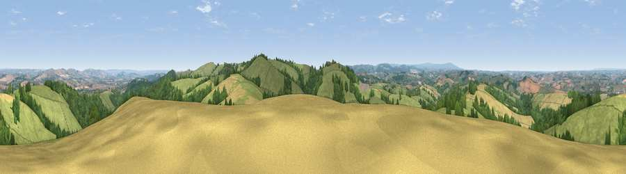

Viewpoint near Pathfinder Village
#4792 in England · top 6% of its area beats it · near Pathfinder VillageWhere it is
The exact computed spot (SX 84562 95875). Click the marker for map links.
The view, rendered

A 360° render of this exact spot computed from the terrain model, tree cover and land cover — summer colours, afternoon light, calibrated against photographs of famous viewpoints. Real trees, hedges and buildings will differ in detail.
The panorama
Grey silhouette: terrain skyline in each direction (720 bearings, Earth curvature and refraction included). Dashed green: skyline with trees (+15 m) and buildings (+8 m) as obstacles. Blue strip: how far the ground is visible on each bearing.
Where the view opens
Wedge length = distance to the farthest visible ground on that bearing (vegetation-aware). Rings at 10, 25 and 50 km.
What fills the view
59% grassland · 21% woodland · 19% cropland ·
Angular shares of the visible panorama (visual magnitude), not map area. Landscape diversity 0.43 (0–1 Shannon).
Key numbers
More beautiful places nearby
The staircase of upgrades: each row has a higher view potential than everything closer. Driving times are estimates from straight-line distance, calibrated against real road routing — check an actual route before setting out.
| Place | Direction | Drive | Score |
|---|---|---|---|
| Viewpoint near Whitestone | SE · 2 km | ~5 min | 75.1 |
| Viewpoint near Whitestone | ESE · 2 km | ~6 min | 79.8 |
| Viewpoint near Kenn | SSE · 14 km | ~25 min | 80.0 |
| Viewpoint near Kenton | SSE · 17 km | ~29 min | 80.7 |
| Viewpoint near Kenton | SSE · 17 km | ~30 min | 82.9 |
| Viewpoint near Holcombe | SSE · 23 km | ~37 min | 83.3 |
| Viewpoint near Shaldon | SSE · 26 km | ~42 min | 83.8 |
| Viewpoint near Stokeinteignhead | SSE · 27 km | ~44 min | 84.1 |
50.75096, -3.63774 · source: screening · position refined by local search. Computed location — check access rights before visiting.